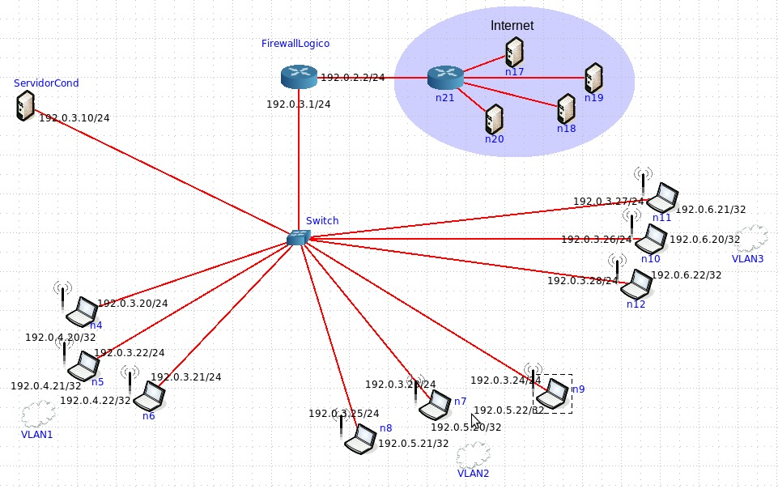

Este projeto tem como objetivo planejar e implementar uma infraestrutura de redes moderna e escalável
para o Centro de Ciências Exatas e Tecnologia (CCET), utilizando como base a planta baixa física do prédio.
A proposta contempla a organização lógica e estrutural dos equipamentos de rede, visando garantir
conectividade eficiente entre os três laboratórios, sala de professores e áreas de circulação.
A arquitetura proposta considera a criação de um ambiente seguro, segmentado e preparado para atividades
acadêmicas, pesquisa científica, desenvolvimento tecnológico e integração com o condomínio de laboratórios
da universidade.
Equipamentos Utilizados na Infraestrutura
Servidor Central: Responsável pelo armazenamento de dados, serviços internos e aplicações acadêmicas.
Gateway com Firewall Lógico: Controla o acesso à internet, aplica regras de segurança e protege a rede contra ataques externos.
Switch de Distribuição: Realiza a interconexão dos equipamentos, permitindo segmentação por VLANs e melhor controle do tráfego.
3 Access Points (Wi-Fi): Distribuídos estrategicamente para garantir cobertura sem fio nos laboratórios e áreas comuns.
15 Computadores: Distribuídos entre os três laboratórios para uso em aulas práticas, pesquisa e desenvolvimento.
Planta Baixa do CCET
A planta baixa abaixo representa a estrutura física do CCET utilizada como referência para o planejamento
da infraestrutura de redes. A partir dela foi possível definir a melhor posição dos equipamentos,
pontos de acesso sem fio e cabeamento estruturado.
Figura 1 — Planta baixa utilizada como base para o projeto de rede do CCET.
Topologia Lógica da Rede
A topologia lógica foi projetada considerando boas práticas de redes corporativas e acadêmicas,
utilizando uma estrutura hierárquica composta por gateway, switch de distribuição e dispositivos finais.
Esse modelo permite maior controle, escalabilidade e segurança.

Figura 2 — Topologia lógica desenvolvida para o ambiente do CCET.
Resultados Esperados
Melhoria significativa na performance da rede local.
Maior estabilidade na comunicação entre os laboratórios.
Ambiente seguro com controle de acesso e segmentação por VLANs.
Infraestrutura preparada para crescimento futuro.
Suporte eficiente para atividades acadêmicas, pesquisa e projetos de extensão.
Integração com o condomínio de laboratórios da universidade.